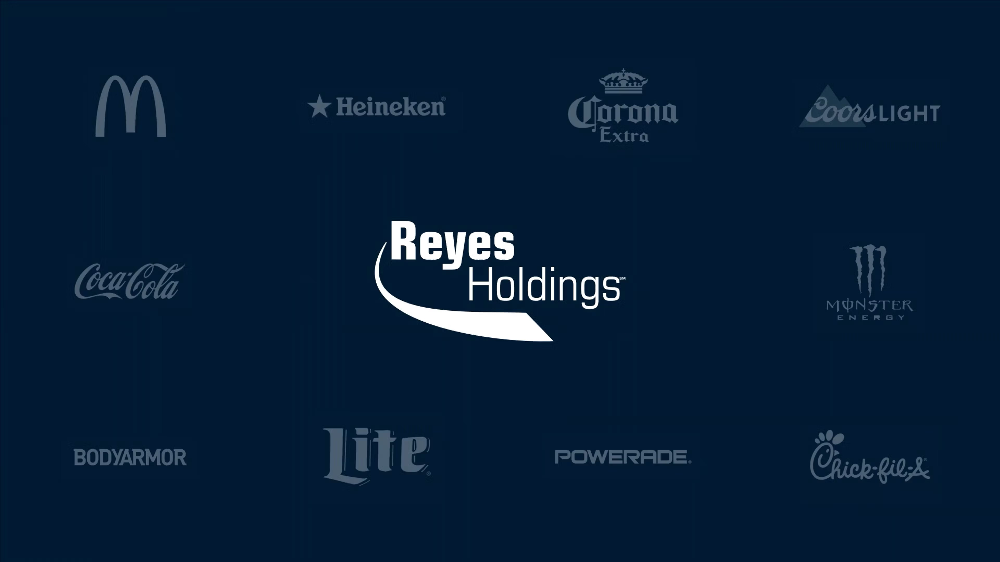
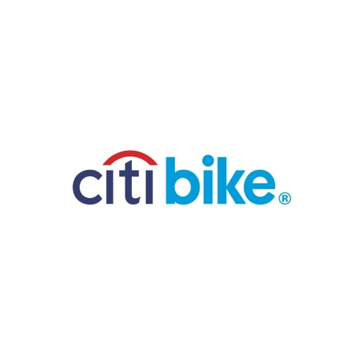
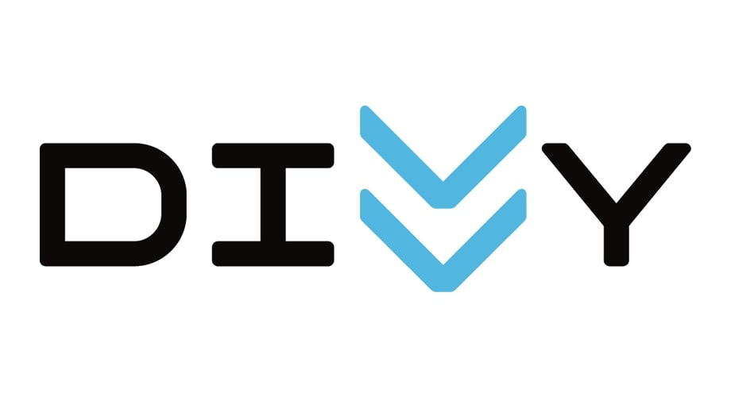
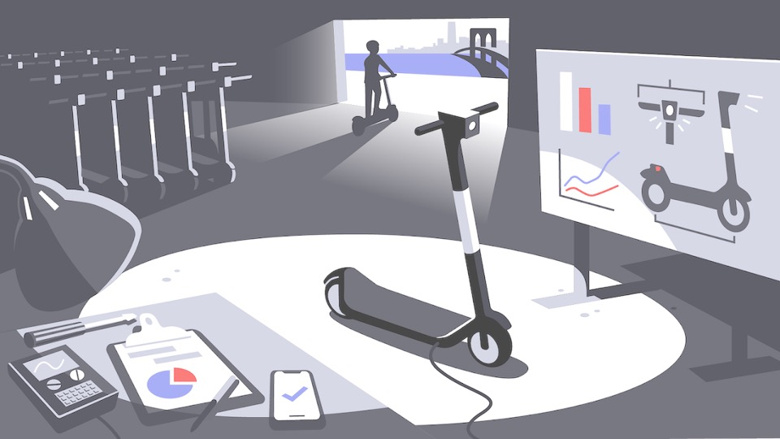

SandoshBala Rajendran
Data Analyst & Business Analyst
Analyst from Chicago helping businesses unlock the power of data.

Data Analyst & Business Analyst
Analyst from Chicago helping businesses unlock the power of data.
I'm SandoshBala Rajendran, a Data Analyst skilled in SQL, R, Python, SAS and Tableau. I have extensive experience working within the banking domain, focusing on enterprise-level data validation, automation, and data lineage mapping to ensure data accuracy and regulatory compliance. My work has helped improve data quality, streamline complex workflows, and develop insightful dashboards that enable informed business decisions.
Beyond banking, I’ve applied my analytical skills to projects involving fleet optimization, demand forecasting, and housing price modeling. I strive to combine technical expertise with business acumen to tackle complex challenges and deliver actionable insights.
Led comprehensive data validation and migration initiatives to improve accuracy and reduce integration challenges. Enhanced data quality and consistency by addressing inconsistencies and building robust SQL validation frameworks. Automated routine processes using SQL and Python, increasing overall efficiency. Standardized data lineage records to support enterprise-wide governance and improve audit readiness.
in database field mapping, reducing integration issues by 25%
Significantly improving data quality
reducing dataset errors by 80%
that boosted system-wide accuracy by 30%
increasing consistency by 20% and speeding issue resolution
cutting manual effort by 40% and enhancing efficiency
improving metadata traceability by 40%
reducing discrepancies by 25%
Experienced in cleaning and organizing large datasets to deliver near-perfect dashboard accuracy. Skilled in writing optimized SQL queries, validating data, and analyzing historical trends to improve report insights. Proven ability to collaborate across teams to provide data-driven support for strategic decisions.
Cleaned and organized datasets, achieving up to 100% dashboard accuracy.
Optimized SQL queries to join data from 3–5 relational tables for weekly reports.
Supported senior analysts by organizing datasets and maintaining documentation.
Analyzed historical data to spot trends and anomalies, improving insights by 10–20%.
Partnered with 2–3 teams to deliver insights for strategic decisions.


Cleaned and modeled fleet data using R, Excel, and Tableau to uncover cost inefficiencies, recommending scheduling optimizations projected to save $3M annually.

Built predictive models in R using historical trip data to enhance demand forecasting accuracy by 20%, supporting optimal bike redistribution and capacity planning.

Visualized spatial-temporal trends using 2M+ trip records in Tableau, influencing Chicago’s infrastructure investments.
Conducted a comparative equity assessment using EPS, P/E ratios, and multi-year stock trends, offering key insights into industrial investment performance.

Comprehensive project management analysis and optimization for the Red Zuma initiative.
Tableau
 Excel
Excel
 Power BI
Power BI
I'm always open to collaborating on impactful projects or exploring new opportunities in data and analytics. Whether you have a challenge to solve or just want to chat, feel free to reach out, I’d love to hear from you.